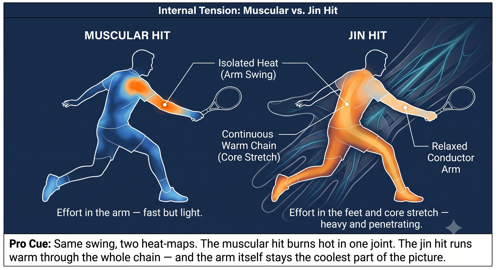

Chapter 16: Jin
(English version of Chapter 16 in the United Tennis Handbook)
CHAPTER 16

Figure 1
JIN / KÌNH
Ting, Hua, Fa — The Three Manifestations
Tensegrity is the structure. The stretch-shortening cycle is the engine. Jin — kình — is what comes out the other end.
Jin isn't muscular power. It's whole-body elastic force transmitted through a tensegrity structure.
— Henry Pham
What Jin (Kình) Actually Is
In Vietnamese internal martial arts it's called kình; in Chinese, jin. Either way, it isn't muscular power — it's whole-body elastic force transmitted through a tensegrity structure. There are three types you need on a tennis court:
The Rule
A muscular hit feels like effort in the arm — the ball goes fast but light, and the opponent handles it easily. A jin hit feels effortless in the arm, with the effort living in the feet and the core stretch instead — the ball goes heavy and penetrates, and the opponent feels it push them back.
Figure 16.1: The three jin are one cycle. Ting feels the stretch, hua absorbs and redirects, fa releases — and the cycle repeats. Three manifestations, one continuous flow.

Figure 2
1. Ting Jin — Listening Jin (Proprioception Plus Fascia)
This is the ability to feel where tension sits in your own fascial lines, and in the ball itself at contact.
– You feel the ball dwell on the strings for about 4 milliseconds through the palm fascia.
– Trained with the eyes-closed shadow, barefoot, and slow-motion work from earlier chapters.
– If you can't feel where the racket face is pointing without looking, your proprioception has been leaning on vision — and that kills Quiet Eye.
Figure 16.2: The ball dwells on the strings for ~4ms. That's ting jin — feeling the face angle, the spin, and the pressure through your palm fascia in real time.

Figure 3
Coach's Note
Drill: the eyes-closed contact hold. Take 10 seconds to move from takeback to a frozen contact position, eyes parked. Feel every inch of fascial stretch build. This trains the spindles to tolerate stretch without firing.
2. Hua Jin — Neutralizing or Transforming Jin (Quiet Eye Plus VOR)
This is the ability to absorb and redirect incoming force without fighting it.
– A short takeback on a fast ball is hua jin itself — you don't add force, you transform the opponent's pace.
– It requires a still head and quiet eyes; without those, you end up fighting force with muscle instead.
– This is why pros make fast serves look easy — they never fight the pace, they redirect it.
Coach's Note
Drill: "absorb and redirect." A partner hits fast drives. You take no backswing at all — just set the angle and let the ball rebound. The feel is that you're not hitting, you're receiving and redirecting. That's hua jin.
3. Fa Jin — Explosive Jin (Fascial Recoil)
This is the snap itself. No wind-up pause — stretch goes directly to release.
– This is exactly why no pause at the end of the takeback matters so much. In a tensegrity structure, stored elastic energy dissipates as heat within about a second if you hold it. Fa jin has to be immediate.
– The push forehand is fa jin traveling forward. The saber is fa jin traveling downward and forward.
– A muscular hit feels like effort in the arm — fast but light, easy for the opponent to handle.
– A jin hit feels effortless in the arm, with the effort living in the feet and the core stretch — heavy, penetrating, and it pushes the opponent back.
The Rule
Fa jin equals an eccentric stretch followed by an immediate concentric release. No pause. Pause, and you've already dissipated the elastic energy.
Figure 16.3: Same swing, two heat-maps. The muscular hit burns hot in one joint. The jin hit runs warm through the whole chain — and the arm itself stays the coolest part of the picture.

Figure 4
The Three Jin in Action
Figure 16.4: Five shots, one three-part pattern every time. What changes shot to shot isn't the pattern — it's only ever the size of the release in the last column.
Coach's Note
Every shot contains all three. Fa jin alone, without ting to feel and hua to absorb, just makes you a ball-basher — not a jin player.
The Jin Checklist
TING: FEEL THE STRETCH. HUA: ABSORB AND REDIRECT. FA: RELEASE WITH NO PAUSE.
– Before the swing: feel the fascial line stretch from foot to hand (ting).
– At the bounce: absorb the incoming energy instead of fighting it (hua).
– At contact: snap — no pause, no muscle, just release (fa).
– If the forearm burns, there was no ting (the stretch went unfelt), no hua (force got fought), and fa was forced.
– If the elbow hurts, the fascial line broke at the shoulder or elbow and the jin leaked out.
– Train with: eyes-closed shadow (ting), absorb and redirect (hua), and bounce-drop-push (fa).
Where This Leads
This chapter establishes jin — kình — as the variable in Q-V-ROOT-8-45-Impulse-Jin CORE. Chapter 17 covers hư thực footwork, empty-full switching. Chapter 18 covers rooting. Chapter 19 covers the forehand push system. Chapter 20 covers the one-handed backhand saber. Chapter 21 covers the two-handed backhand hybrid.